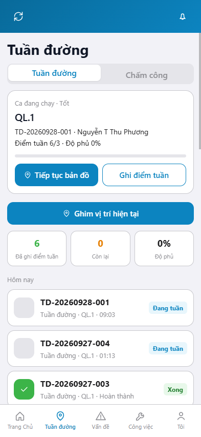
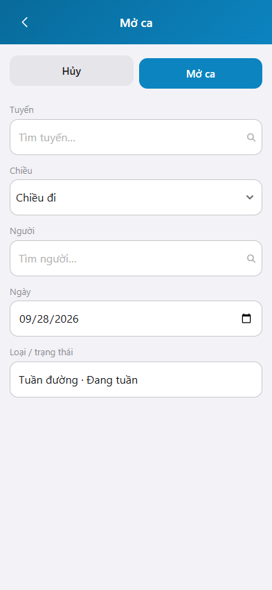
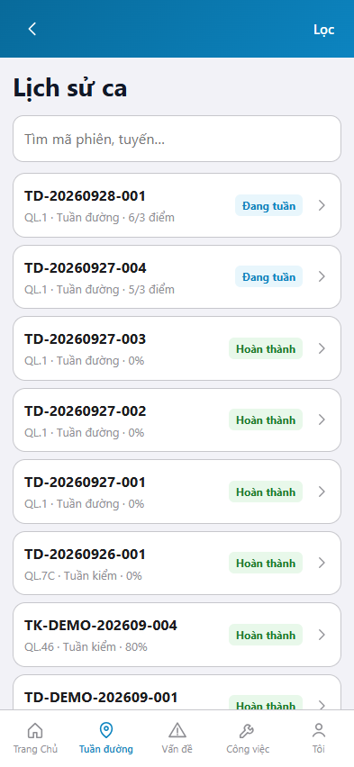

Ảnh khung iPhone 15, 393 x 852. Bản markdown.
Tuần đường là việc của đơn vị bảo dưỡng thường xuyên: mở ca trên tuyến, ghi điểm tuần, xem ca đang chạy và lịch sử ca.
Đăng nhập: Hướng dẫn đăng nhập.
graph TD
A[Đăng nhập] --> B[Tuần đường]
B --> C[Mở ca]
C --> D[Ghi điểm tuần]
B --> E[Lịch sử ca]
Mục đích: xem ca đang chạy, số điểm tuần đã ghi và các thao tác trong ca.

Mục đích: lập ca tuần đường mới trên một tuyến, một chiều, một người.

* = bắt buộc khi Mở ca. Ô trống = không bắt buộc.
| Nhãn trên màn | * | Cách điền |
|---|---|---|
| Tuyến | * | Chọn tuyến trong danh mục. |
| Chiều | Chiều đi, Chiều về hoặc Hai chiều. | |
| Người | * | Chọn người tuần trong danh mục. |
| Ngày | Ngày kế hoạch. Mặc định hôm nay. | |
| Loại / trạng thái | Chỉ đọc: Tuần đường, Đang tuần. |
Mục đích: tra cứu ca tuần đường và ca tuần kiểm đã ghi.
